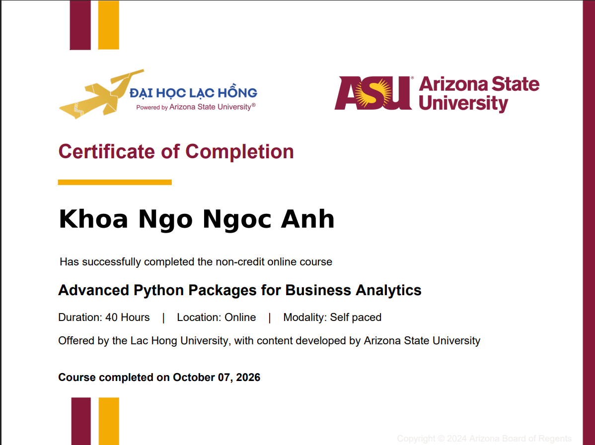

Nhập môn công nghệ
Bắt đầu xây dựng nền tảng về lập trình, máy tính và tư duy giải quyết vấn đề.
VỀ MÌNH · 02 / 03
Mình là Ngô Ngọc Anh Khoa, sinh viên năm hai ngành Công nghệ Thông tin. Đây là câu chuyện về những điều mình đang học và những dấu mốc trên đường đi.
ABOUT01 — XIN CHÀO
Mình yêu thích công nghệ, có tinh thần học hỏi và luôn muốn khám phá những kiến thức mới trong lĩnh vực lập trình và máy tính. Mỗi môn học, dự án hay thử thách đều là một cơ hội để mình tiến thêm một bước.
Hai năm học tập tại trường mang đến cho mình nhiều hơn kiến thức: đó còn là những lần thử sức, những khó khăn đã vượt qua và những bài học giúp mình trưởng thành hơn.
Hành trình của tôi vẫn đang tiếp diễn, và mỗi dòng code hôm nay là một bước tiến đến phiên bản tốt hơn của chính mình ngày mai.
02 — NỀN TẢNG ĐÃ TÍCH LŨY
03 — TRÊN ĐƯỜNG ĐI
Bắt đầu xây dựng nền tảng về lập trình, máy tính và tư duy giải quyết vấn đề.
Thử sức với HTML, CSS, JavaScript, Python, SQL, IoT và mạng máy tính qua từng môn học, dự án.
Tìm hiểu và đạt các chứng chỉ Python của ASU, củng cố kiến thức lập trình và kỹ năng chuyên môn.
04 — NHỮNG DẤU MỐC
Các chứng chỉ Python của ASU là một dấu mốc giúp mình vững tin hơn trên con đường đã chọn. Mỗi thành tựu, dù lớn hay nhỏ, đều nhắc mình tiếp tục cố gắng.

Chứng chỉ Python · Đại học Lạc Hồng và Arizona State University
TIẾP THEO LÀ GÌ?
Mình mong muốn trở thành một lập trình viên có năng lực, tạo nên những sản phẩm công nghệ hữu ích và từng bước chinh phục những mục tiêu lớn hơn.
Gửi lời chào